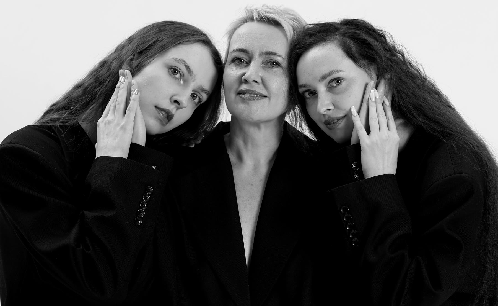

на этой фотографии тебе 25, а папе — 28. Сейчас Свете столько же, сколько тебе тогда, а Тане — столько же, сколько папе.
В 25 ты стала мамой Тани. Через три года родилась Света. И вот мы смотрим на эту фотографию и думаем, сколько всего мы с тех пор прожили вместе. Сейчас, когда мы сами в том возрасте, даже представить сложно, сколько сил ты вложила в то, чтобы вырастить нас двоих.
У тебя наверняка совсем свои воспоминания о тех годах. Многое мы просто не могли заметить, пока сами были детьми. А кое-что мы до сих пор помним так хорошо, будто это было вчера. Когда вспоминаем такие вещи, снова чувствуем, сколько любви ты нам давала. И словами трудно передать, как мы тебе за это благодарны.
Когда мы начали вспоминать эти моменты один за другим, мы поняли, как много в каждой из нас от тебя.

ТаняСветавместе
Света
Летний учебник в начальной школе
Каждую ночь я лежала и не могла уснуть. У меня был ритуал — прийти к тебе, рассказать о том, как я переживаю, и поплакать. Мне было так тревожно из-за учебника, который нам в начальной школе задали делать летом. Я приходила к тебе и только после этого могла заснуть. Ты ни разу меня не прогнала и не ругалась, что я опять пришла.
Таня
Субботние завтраки
По субботам ты жарила нам блины или оладушки. В детстве мне казалось, что это обычный субботний завтрак. А сейчас мне и для себя-то бывает сложно нажарить блинов, и я думаю, как ты с двумя детьми умудрялась делать это каждую субботу.
И сейчас каждый раз, когда мы приезжаем домой, мы снова едим твои оладушки или блинчики.
Так я говорила каждый раз, когда звонила тебе на работу. Я звонила тебе ещё в начальной школе, а потом и в средней. И каждый раз мне было так тепло слышать твой голос.
Таня
Каша в любое время
Когда мы были голодные, ты всегда варила нам кашу. Даже если мы возвращались с какой-нибудь невероятной тусовки в двенадцать ночи. Бабушка тоже удивлялась, как часто ты нам её готовишь.
Тогда мы особо этого не замечали. Ну захотели есть, ну мама сварила кашу. А сейчас я понимаю, что ты ведь и сама могла устать и хотеть спать, а всё равно шла на кухню, чтобы мы не остались голодными.
Света
Когда я ушла с танцев
Мы заказали два крутых костюма для танцев. Их шили специально для меня, и мы потратили на них кучу денег. Я к тому моменту занималась уже три года. А после одного соревнования поняла, что танцы мне больше не нравятся и я хочу уйти.
Когда я тебе об этом сказала, ты так сильно меня поддержала. Ты ни слова не сказала про то, сколько мы потратили на костюмы. Ты просто была на моей стороне.
Это, наверное, одно из самых важных моих воспоминаний. Я до сих пор плачу каждый раз, когда об этом вспоминаю. Мам, я так тебе за это благодарна.
Таня
Английские слова
В школе я учила английские слова в том порядке, в котором выписала их на бумажку. Потом попросила тебя меня проверить, а ты начала спрашивать вразнобой. Я возмутилась — «Мам, ну я же в другом порядке учила!»
Ты тогда объяснила мне, что в жизни слова в том же порядке, что на моей бумажке, не попадутся. Вот так я и поняла, как их вообще надо учить.
Таня и Света
Наши мегаконцерты
Мы весь вечер придумывали всякие номера, а потом вы поднимались к нам на второй этаж смотреть концерт. Вы смотрели все наши номера, снимали нас на камеру и хлопали.
А когда уже собирались уходить, обязательно пили «напосошок». И так раз тысячу. А мы каждый раз получали ещё немного времени потусить.
Света
Конфеты над холодильником
Однажды я нашла коробку конфет в узкой щели над холодильником. Ты прятала от меня конфеты везде-везде, а я умудрялась находить их даже там. И ты меня за это ни разу не ругала.
а ещё мы были вот такие
Таня
Скоро на море
Перед поездкой в Турцию мы с тобой пошли за покупками. Ты вдруг так обрадовалась, что скоро увидишь море. Сказала что-то вроде «Я даже не верю, что мы скоро полетим!»
Я до сих пор помню, какая ты тогда была счастливая. Удивительно, но и сейчас, когда я думаю о море, первой вспоминаю тебя.
Света
Когда я иду к морю
Я каждый раз думаю о тебе, когда иду к морю. Ты его так любишь, что мне иногда кажется, будто от тебя мне передалось и это чувство, что без моря мне чего-то не хватает.
Таня
Подарки от Деда Мороза
Каждый Новый год после курсантов мы шли домой, а там форточка открыта и лежат конфеты. Мы были уверены, что, пока нас не было, к нам заглянул Дед Мороз.
И каждый год у нас правда было это чувство, будто дома случилось что-то волшебное. Теперь я понимаю, что эту сказку для нас устраивала ты.
Таня
Как мы подрабатывали
Мы со Светой красили заборы у тебя на работе. Мне было так необычно работать там же, где и ты. А когда нам заплатили, я так обрадовалась. Тогда эта сумма казалась нам очень большой.
Мы подрабатывали и у тебя, и у папы. Мне очень ценно, что вы давали нам такую возможность. Благодаря этому мы знаем, что всегда сможем сами заработать и себя обеспечить.
И ещё я думаю о квартирах, которые нам достались. Как бы ни сложилась жизнь, у каждой из нас есть место, куда можно вернуться. От этого спокойнее.
Света
Пиджак из Lime
В девятом или десятом классе мы с тобой зашли в Lime, и мне там ужасно понравился один пиджак. В тот день мы не смогли его купить, и я расстроилась.
А потом ты принесла его домой. Тот самый пиджак. Он стоил больших денег, и я совсем не ожидала, что ты всё-таки его купишь.
Таня
Тусовка на даче
В десятом классе мы решили устроить тусовку на даче со школьными друзьями. Я до сих пор удивляюсь, что нам тогда разрешили собраться самим. А потом ты приехала за нами, чтобы забрать нас домой. Мне было очень приятно, что ты о нас так позаботилась. Нам дали побыть самим по себе, и при этом я знала, что ты за нами приедешь.
Таня
Наши поездки
Когда ты куда-то ездила отдыхать, ты всегда брала нас со Светой с собой. В детстве мне казалось, что быть всегда вместе — это само собой. А сейчас я понимаю, что мало у кого было такое детство, когда на отдых всегда ездили всей семьёй.
Света
Заселение в общежитие
Когда я заселялась в общагу, ты осталась ждать меня на улице. Ты прождала меня там очень долго. Я поняла, что тебе было обидно, но тогда совсем не задумалась о том, каково тебе было.
Сейчас я думаю о том, как непросто тебе, наверное, было, когда мы с Таней разъехались по разным городам. Мам, спасибо тебе за то, что ты тогда отпустила нас обеих. И за то, что ты и сейчас даёшь нам самим решать, как мы хотим жить, и всегда нас поддерживаешь.
Света
Камин
С первого курса я мечтала подарить тебе камин. У меня даже в заметках в списке целей так и написано — найти работу, чтобы подарить маме камин. Я очень-очень хотела сама на него заработать. Меня тогда правда двигала мысль о том, что однажды я смогу тебе его купить.
Таня и Света
Фен для мамы
Наш первый серьёзный подарок тебе стоил, кажется, три тысячи рублей. По тем временам для нас это были большие деньги. Мы купили тебе фен и очень хотели тебя порадовать.
В итоге фен забрала себе Света.
Таня
Зимние сапоги и билет домой
На первом курсе у меня и так были деньги на месяц, но однажды мне понадобились зимние сапоги, а они стоили дорого. Ты тогда помогла мне их купить. И так бывало много раз. Когда нам со Светой что-то было нужно, ты всегда находила возможность помочь.
Даже сейчас, когда мы говорим о том, чтобы я приехала, ты предлагаешь скинуться мне на билет. Я уже могу купить его сама, но мне всё равно очень тепло от твоего предложения. Я слышу в нём, как сильно тебе хочется, чтобы мы увиделись.
и как же хорошо, когда мы видимся
Света
Когда я встречалась с Даниилом
Когда я встречалась с Даниилом, тебе, наверное, было тяжело видеть, как он иногда со мной обращался. Ты никогда не вмешивалась в наши отношения и не давала советов, если я сама не спрашивала. Ты давала мне самой решать, как быть. Я очень тебе за это благодарна.
Света
Видео в семейном чате
Однажды ты скинула в наш семейный чат видео про то, как мужчины и женщины смотрят на деньги в паре. Я до сих пор его помню. После него я правда стала по-другому относиться к деньгам в отношениях.
Света
Видео в Кирове
Когда мы с тобой ездили в Киров на операцию на глаза, мы вместе смотрели выпуск «Пси 2.0». Там одна девушка рассказывала о том, как она думает о детях. Мне так запомнилось то, что Филяев сказал ей в ответ, что я записала эту мысль в заметки и до сих пор её помню.
После того выпуска я стала увереннее в том, что могу сама решать, чего хочу для себя.
а это просто ты — наша мама
Таня и Света
Мам, прежде чем мы скажем тебе кое-что от нас сегодняшних, давай на минутку вернёмся к нам маленьким.
В детстве нам казалось, что у всех так. Что к маме можно прийти с чем угодно и она выслушает. Сейчас мы понимаем, сколько ты для нас делала и как нам повезло, что мы до сих пор можем рассказать тебе обо всём. Мало у кого с мамой такие тёплые отношения, как у нас с тобой. И нам очень дорого, что мы друг с другом тоже выросли такими близкими.
Мы очень любим наши созвоны. Ты всегда внимательно слушаешь, даже когда мы просто рассказываем, как прошёл день. А когда нам трудно, ты умеешь поддержать и не спешишь советовать, как нам поступить. С тобой можно сказать всё как есть.
Куда бы мы ни разъехались и что бы ни случилось, у нас всегда есть Сыктывкар. Там, рядом с тобой, мы чувствуем себя в безопасности.
А ещё ты безумно красивая.
Света
Максим как-то сказал, что о девушке многое можно понять, если посмотреть на её маму. Ну, мы с ним всё ещё вместе, ахах.
А если выбирать между поездкой куда угодно с друзьями и временем с тобой в Сыктывкаре, я всегда выберу тебя. Мне очень важно, что мы с тобой так близки. И я очень люблю, когда можем побыть вдвоём, просто ты и я.
Таня и Света
Мам, ты тоже всегда можешь на нас рассчитывать. В любой момент можешь позвонить нам, если нужна помощь с деньгами или если хочется, чтобы тебя просто выслушали и поддержали.
Мамуля, нам всегда-всегда хочется с тобой общаться, знать, как у тебя дела, и видеться при любой возможности. Спасибо, что с тобой нам так уютно. Мы тебе очень доверяем и очень тебя любим.
С Днём матери, мамуля!
Твои Таня и Света ❤️
У тебя в этот раз такая красивая дата дня рождения —
27.01.2027
В такой день мы просто должны быть вместе. Поэтому у нас для тебя есть ещё кое-что…
Кликни на подарочек
Мы обе приедем в Сыктывкар, чтобы вместе отпраздновать твой день рождения! ❤️